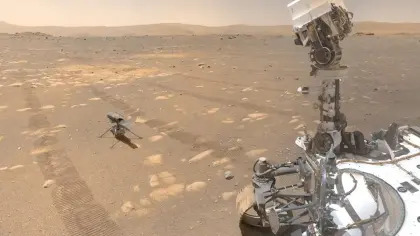

Will generative AI destroy the nascent NFT market for artists?
As the stream of AI-generated art turns into a deluge, NFTs could become a cornerstone of the Virtual Renaissance.
by Edward Lee

Starts With A Bang Podcast #93. Mars from the ground
Mars, the red planet, was a world we knew almost nothing about until our first spacecraft visited it. In just ~50 years, how far we’ve come!
HEALTH
Rapamycin: The unlucky history of the most powerful anti-aging drug
THINKING
How to create a better world without massive social disruption
LIFE
Orlando's first major attraction was an angry swan named Billy
WELL
The horrifying problem of meaning